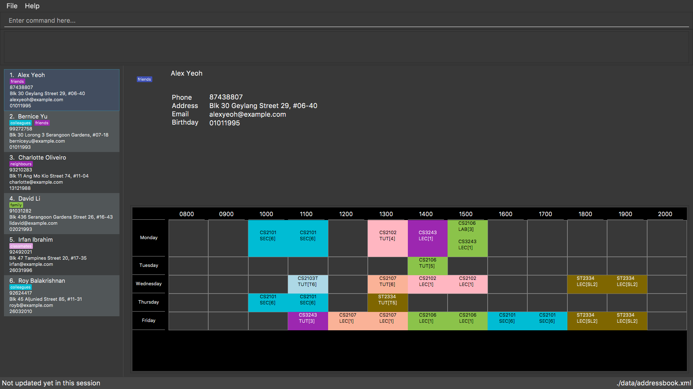

By: Team SE-EDU Since: Jun 2016 Licence: MIT
- 1. Introduction
- 2. Quick Start
- 3. Features
- 3.1. Viewing help :
help - 3.2. Adding a person:
add - 3.3. Adding a command alias:
alias(since v1.1) - 3.4. Listing all persons :
list - 3.5. Editing a person :
edit - 3.6. Locating persons by name:
find - 3.7. Locating persons taking that module:
module(coming in v1.3) - 3.8. Viewing a collated birthday list:
birthdays(coming in v1.3) - 3.9. Viewing common time slots in timetable:
free(coming in v2.0) - 3.10. Deleting a person :
delete - 3.11. Selecting a person :
select - 3.12. Importing address book :
import(since v1.1) - 3.13. Vacant study rooms finder :
vacant(coming in v1.3) - 3.14. Listing entered commands :
history - 3.15. Undoing previous command :
undo - 3.16. Redoing the previously undone command :
redo - 3.17. Clearing all entries :
clear - 3.18. Exiting the program :
exit - 3.19. Saving the data
- 3.20. Encrypting data files :
password(coming in v1.3) - 3.21. Sorting all persons by module code:
sortCode(coming in v2.0)
- 3.1. Viewing help :
- 4. FAQ
- 5. Command Summary
1. Introduction
Stardy Together (ST) is mainly for NUS Students who prefer to use a desktop app for managing contacts. More importantly, ST is optimized for those who prefer to work with a Command Line Interface (CLI) while still having the benefits of a Graphical User Interface (GUI). If you can type fast, ST can get your contact management tasks done faster than traditional GUI apps. Interested? Jump to the Section 2, “Quick Start” to get started. Enjoy!
2. Quick Start
-
Ensure you have Java version
1.8.0_60or later installed in your Computer.Having any Java 8 version is not enough.
This app will not work with earlier versions of Java 8. -
Download the latest
addressbook.jarhere. -
Copy the file to the folder you want to use as the home folder for your Address Book.
-
Double-click the file to start the app. The GUI should appear in a few seconds.
 -
Type the command in the command box and press Enter to execute it.
e.g. typinghelpand pressing Enter will open the help window. -
Some example commands you can try:
-
list: lists all contacts -
addn/John Doe p/98765432 e/johnd@example.com a/John street, block 123, #01-01 b/010195: adds a contact namedJohn Doeto the Address Book. -
delete3: deletes the 3rd contact shown in the current list -
exit: exits the app
-
-
Refer to Section 3, “Features” for details of each command.
3. Features
Command Format
-
Words in
UPPER_CASEare the parameters to be supplied by the user e.g. inadd n/NAME,NAMEis a parameter which can be used asadd n/John Doe. -
Items in square brackets are optional e.g
n/NAME [t/TAG]can be used asn/John Doe t/friendor asn/John Doe. -
Items with
… after them can be used multiple times including zero times e.g.[t/TAG]…can be used ast/friend,t/friend t/familyetc. -
Parameters can be in any order e.g. if the command specifies
n/NAME p/PHONE_NUMBER,p/PHONE_NUMBER n/NAMEis also acceptable. -
Date must be in DDMMYY format
3.1. Viewing help : help
Format: help
3.2. Adding a person: add
Adds a person to the address book
Format: add n/NAME p/PHONE_NUMBER e/EMAIL a/ADDRESS b/BIRTHDAY [t/TAG]…
| A person can have any number of tags (including 0) |
Examples:
-
add n/John Doe p/98765432 e/johnd@example.com a/John street, block 123, #01-01 b/010195 -
add n/Betsy Crowe t/friend e/betsycrowe@example.com a/Newgate Prison p/1234567 b/121212 t/criminal
3.3. Adding a command alias: alias (since v1.1)
Creates customised aliases for any valid command
Format: alias [COMMAND] [ALIAS]
Examples:
-
alias history hist -
alias find f -
alias alias al
3.4. Listing all persons : list
Shows a list of all persons in the address book.
Format: list
3.5. Editing a person : edit
Edits an existing person in the address book.
Format: edit INDEX [n/NAME] [p/PHONE] [e/EMAIL] [a/ADDRESS] [b/BIRTHDAY] [t/TAG]…
Examples:
-
edit 1 p/91234567 e/johndoe@example.com
Edits the phone number and email address of the 1st person to be91234567andjohndoe@example.comrespectively. -
edit 2 n/Betsy Crower t/
Edits the name of the 2nd person to beBetsy Crowerand clears all existing tags.
3.6. Locating persons by name: find
Finds persons whose names contain any of the given keywords.
Format: find KEYWORD [MORE_KEYWORDS]
Examples:
-
find John
ReturnsjohnandJohn Doe -
find Betsy Tim John
Returns any person having namesBetsy,Tim, orJohn
3.7. Locating persons taking that module: module (coming in v1.3)
Finds persons who is taking the module as specified.
Format: module MODULE_CODE
Examples:
-
module CS2010
Returns all persons having CS2010 in their modules
3.8. Viewing a collated birthday list: birthdays (coming in v1.3)
Displays a list that contains all the birthdays of all contacts ordered in date
Format: birthdays
3.9. Viewing common time slots in timetable: free (coming in v2.0)
Displays the common free time of two people in the addressbook.
Format: free p/[PERSON1] p/[PERSON2]
Examples:
-
free p/John Doe p/Han Tan
Displays the combined timetable for John Doe and Han Tan.
3.10. Deleting a person : delete
Deletes the specified person from the address book.
Format: delete INDEX
Examples:
-
list
delete 2
Deletes the 2nd person in the address book. -
find Betsy
delete 1
Deletes the 1st person in the results of thefindcommand.
3.11. Selecting a person : select
Selects the person identified by the index number used in the last person listing.
Format: select INDEX
Examples:
-
list
select 2
Selects the 2nd person in the address book. -
find Betsy
select 1
Selects the 1st person in the results of thefindcommand.
3.12. Importing address book : import (since v1.1)
Imports an address book from filepath to the existing address book. Persons, Tags, and Aliases that are not in your address book will be added.
Format: import FILEPATH
Examples:
-
import data/addressBook.xml
Imports address book XML file at data folder.
3.13. Vacant study rooms finder : vacant (coming in v1.3)
Finds vacant study rooms in the building at the specified timing.
Format: vacant TIME BUILDING
Examples:
-
vacant 1400 ERC
Finds vacant study rooms in ERC building at 1400.
3.14. Listing entered commands : history
Lists all the commands that you have entered in reverse chronological order.
Format: history
|
Pressing the ↑ and ↓ arrows will display the previous and next input respectively in the command box. |
3.15. Undoing previous command : undo
Restores the address book to the state before the previous undoable command was executed.
Format: undo
|
Undoable commands: those commands that modify the address book’s content ( |
Examples:
-
delete 1
list
undo(reverses thedelete 1command) -
select 1
list
undo
Theundocommand fails as there are no undoable commands executed previously. -
delete 1
clear
undo(reverses theclearcommand)
undo(reverses thedelete 1command)
3.16. Redoing the previously undone command : redo
Reverses the most recent undo command.
Format: redo
Examples:
-
delete 1
undo(reverses thedelete 1command)
redo(reapplies thedelete 1command) -
delete 1
redo
Theredocommand fails as there are noundocommands executed previously. -
delete 1
clear
undo(reverses theclearcommand)
undo(reverses thedelete 1command)
redo(reapplies thedelete 1command)
redo(reapplies theclearcommand)
3.17. Clearing all entries : clear
Clears all entries from the address book.
Format: clear
3.18. Exiting the program : exit
Exits the program.
Format: exit
3.19. Saving the data
Address book data are saved in the hard disk automatically after any command that changes the data.
There is no need to save manually.
3.20. Encrypting data files : password (coming in v1.3)
Changes the password used to encrypt the address book.
Format: password PASSWORD
Examples:
-
password test
Encryptsaddressbook.xmlwith "test" as the key.
3.21. Sorting all persons by module code: sortCode (coming in v2.0)
Sorts all persons in the addressbook by module code in the order of A to Z.
Format: sortCode
4. FAQ
Q: How do I transfer my data to another Computer?
A: Install the app in the other computer and overwrite the empty data file it creates with the file that contains the data of your previous Address Book folder.
5. Command Summary
-
Add
add n/NAME p/PHONE_NUMBER e/EMAIL a/ADDRESS [t/TAG]…
e.g.add n/James Ho p/22224444 e/jamesho@example.com a/123, Clementi Rd, 1234665 b/010195 t/friend t/colleague -
Alias
alias [COMMAND] [ALIAS]
e.g.alias history hist -
Clear :
clear -
Delete :
delete INDEX
e.g.delete 3 -
Edit :
edit INDEX [n/NAME] [p/PHONE_NUMBER] [e/EMAIL] [a/ADDRESS] [b/BIRTHDAY] [t/TAG]…
e.g.edit 2 n/James Lee e/jameslee@example.com -
Find :
find KEYWORD [MORE_KEYWORDS]
e.g.find James Jake -
List :
list -
Help :
help -
Select :
select INDEX
e.g.select 2 -
Import :
import FILEPATH
e.g.import data/addressBook.xml -
Vacant :
vacant TIME BUILDING
e.g.`vacant 1400 ERC -
History :
history -
Undo :
undo -
Redo :
redo -
Password :
password PASSWORD
e.g.password test